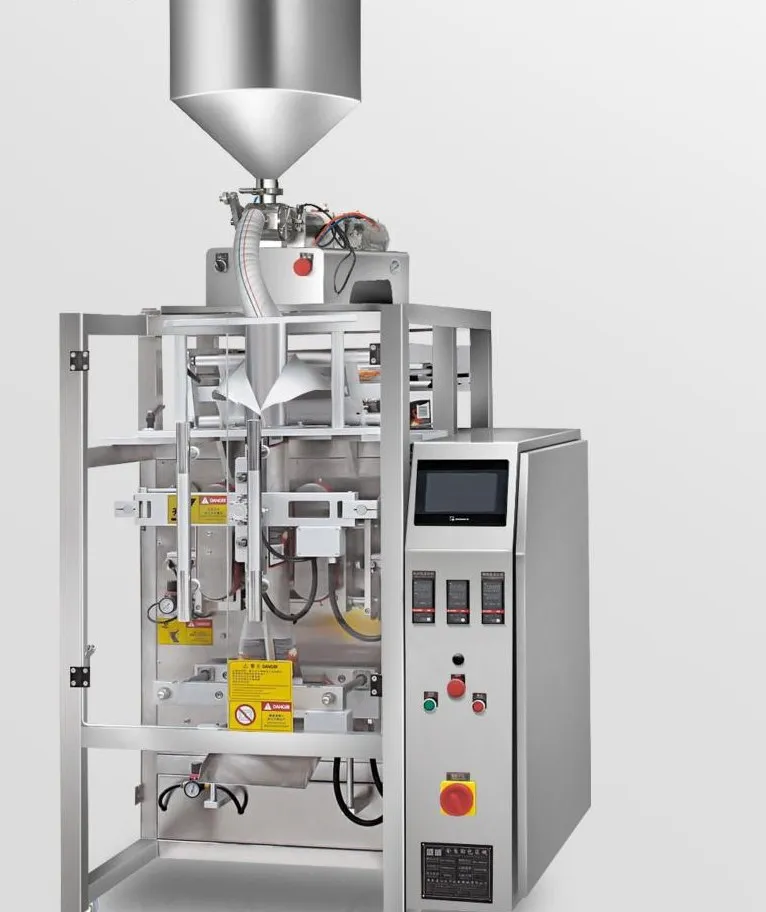
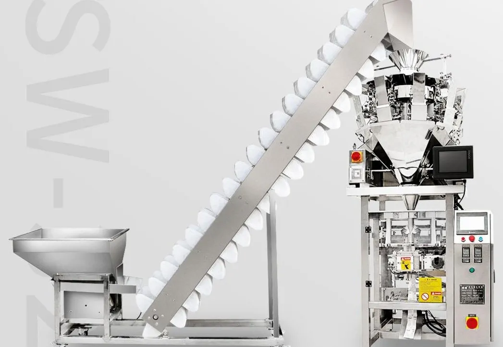
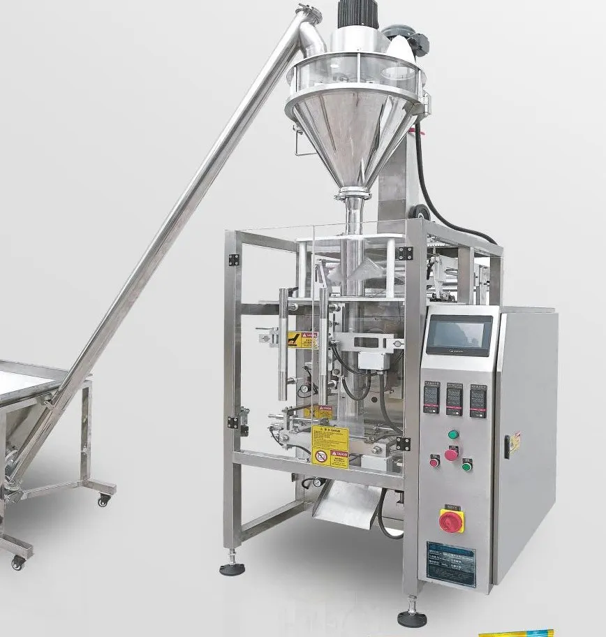

Automatic Liquid & Paste Vertical Packing Machine
Models: FL-V420L series
Pumps and seals sauces, ketchup, edible oil, honey, vinegar, shampoo and liquid detergent into pillow sachets — viscosity-matched pumping for clean, leak-free seals.
- Pump size
- 10 ml – 3000 ml
- Bag type
- Pillow / 3-side
- Metering
- Piston or rotor pump
- Hopper
- Optional heating & mixing
- Contact parts
- SUS304 / SUS316L
- Control
- PLC + touch screen
At a glance: Automatic Liquid & Paste Vertical Packing Machine (FL-V420L series): pump size 10 ml – 3000 ml; bag type Pillow / 3-side; metering Piston or rotor pump; hopper Optional heating & mixing; contact parts SUS304 / SUS316L; control PLC + touch screen.
What it packs
Ketchup, chilli sauce, hot-pot base, soy sauce, vinegar, edible oil, honey, jam, shampoo, liquid detergent, lubricating oil.
Key features
- Fully automatic liquid and paste packing.
- Handles liquids of different viscosities; pump type matched to product.
- No product – no bag, saving film.
- Contact-part material customised to product (e.g. 316L for salty or acidic sauces).
- High accuracy and clean, attractive sachets.
Liquid & Paste VFFS technical specifications
| Model | Small pump | Medium pump | Large pump |
|---|---|---|---|
| Dosing range | 30–250 ml | 10–100 ml | 1000–3000 ml |
| Mainframe | Matched from FL-V420 – FL-V730 by bag size | ||
| Bag type | Back-seal pillow / 3-side seal | ||
| Control | PLC + touch screen | ||
Speed and accuracy depend on the product, fill weight and film. Specifications may be customised.
Options & configurations
Heated hopper with stirrer for hot sauces; CIP-friendly quick-release pump; premade-pouch liquid version (8-station) for spout and stand-up pouches.
FAQ about the Liquid & Paste VFFS
Can it pack sauce with solid pieces?
Yes, with a large-bore piston pump and rotary valve. Tell us the maximum particle size.
How do you avoid leaking seals?
Anti-drip nozzles, liquid-stopping clamps and extended sealing jaws with temperature PID control prevent product contaminating the seal area.
Related machines

VFFS with Multihead Weigher
A complete weigh-and-bag line for chips, puffed snacks, nuts, candy, dried fruit, frozen dumplings and pet food: Z-type elevator → multihead weigher → VFFS bagger → output conveyor.
View specs →
VFFS Packing Machine 420–900
The bag-making mainframe at the heart of most packing lines — five frame sizes from 420 to 900 mm film width, matched with a weigher, cup filler, auger or liquid pump.
View specs →
Powder VFFS with Auger Filler
Screw feeder → auger filler → vertical bagger for flour, milk powder, starch, spices, protein and chemical powders, with dust-controlled filling.
View specs →Get a quote for the Liquid & Paste VFFS
Tell us your product, pack weight and speed. An engineer replies within 24 hours with a recommended configuration, layout and price. Free product testing with video.